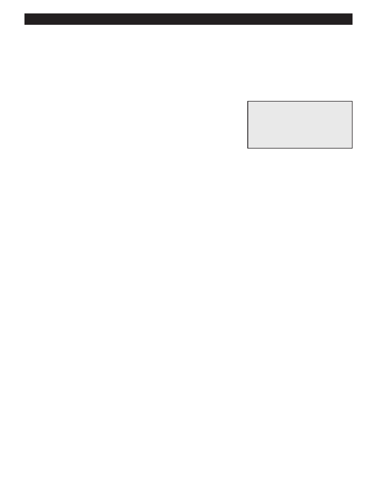

PA RT I C I PA N T R E S O U R C E G U I D E
Fixing a Pop-up Stopper in a Sink
Many sinks hold water with a mechanical stopper called a pop-up stopper. If the sink
won’t hold water, or if the water in the sink drains too slowly, clean the pop-up stopper,
and if needed, adjust it.
Safety
Tools and Materials Needed
Wear eye and hand protection.
Screwdriver
Small brush
Replacement gasket (if needed)
How-to Steps: Cleaning a Pop-up Drain Stopper
1. Under the sink, lift up the drain stopper shaft.
2. Unscrew the shaft nut.
3. Remove the drain stopper shaft from drain pipe.
4. In the sink, take out the drain stopper.
5. Clean the stopper with a small brush.
6. Examine the gasket for damage and replace it if needed.
7. Reinstall the stopper.
8. Reconnect the stopper to the shaft and then reattach the shaft nut.
9. Test to make sure stopper works. Adjust if necessary.
How-to Steps: Adjusting a Pop-up Drain Stopper
If the sink doesn’t drain correctly, adjust the clevis:
1. Loosen the clevis screw.
2. Move the clevis up or down on the stopper rod to adjust the position of the stopper.
3. Tighten the clevis screw.
Notes:
76